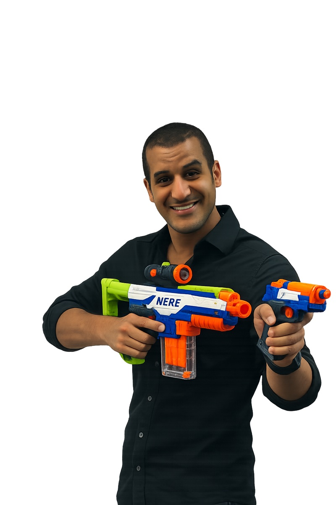

מפגש פתיחה · יסודות ה-GenAI
חמש קפיצות פאזה ושלב אחד שעוד לא נכתב
יצירת טקסט, תמונות וקוד בקנה מידה רחב
ארגונים מתחילים לשלב AI בתהליכים
קפיצת דיוק ואמינות בטקסט, תמונה, קול ווידאו
מערכות שמבצעות משימות, לא רק עונות
Gen AI בתוך תוכנות, שירותים ותהליכי עבודה
יותר אינטגרציה, יותר התאמה אישית
השאלה לא "אם זה רלוונטי לכם", אלא "באיזה שלב אתם נכנסים".
איך AI באמת עובד מתחת למכסה.
זהו. כל השאר - חשיבה, כלים, זיכרון - זו הנדסה מעל הטריק האחד הזה.
ככה טקסט הופך למספרים שהמודל מבין
כשאתם משלמים על API, משלמים פר טוקן. עברית עולה כפול.
המודל לא בוחר את "התשובה הנכונה" - הוא מטיל קובייה משוקללת בין כל האפשרויות לפי הסיכוי שלהן. לכן אותו פרומפט יכול לתת תשובה שונה בכל הרצה - זו לא תקלה, ככה המודל בנוי לעבוד.
לפני שהמודל "דוגם" - הוא בודק את כל ההקשר. זה נקרא Attention.
לכל מילה חדשה, המודל בודק את כל המילים הקודמות בחלון - לא רק את האחרונה.
לכל מילה הוא נותן "ציון תשומת לב" - כמה היא רלוונטית למילה הבאה. "השמיים" ⟵ "כחולים" מקבלת ציון גבוה.
המשקלים האלה הם בדיוק מה שיוצר את ההסתברויות שראינו (62% / 18% / 12% / 8%).
לכן איפה שאתם שמים את המידע בפרומפט משנה - המודל "מקשיב" יותר למילים שקרובות לסוף.
הכל יוצא מ"מנבא את הטוקן הבא"
ניבוי סביר ≠ נכון. המודל "ממציא" כי זה מה שסביר ברצף.
המודל "רואה" רק מה שבחלון. מה שיוצא, נשכח.
הניסוח שלכם מטה את הניבוי לכיוון הרצוי.
תשובה שונה כל פעם, כל קריאה היא דגימה חדשה מהפילוג.
שתילת עובדות בחלון, כדי שהמודל ינבא על בסיס אמת.
הוא לא משקר, הוא רק עושה את העבודה שהוא יודע
סיכום RFP בן 80 עמ', המודל "ממציא" סעיף 4.7 שלא קיים במסמך, אבל נראה הגיוני בהקשר.
RAG + ציטוטים מחויבים בפרומפט + אימות אנושי. אם אין ציטוט, אל תאמין.
הוא לא משקר, הוא עושה את העבודה היחידה שהוא יודע: ניחוש.
נבחן את אותה שאלה ב-3 כלים שונים, ונראה איך הקלט משנה את הפלט.
צופים בזמן אמת.
אותו "מנוע ניבוי". הקלט הוא מה שמשנה את התוצאה.
4 השחקנים הגדולים, ולמה כל אחד טוב
ההבדל מתחיל ב: (א) מסמכים ארוכים (ב) ציטוטים מחייבים (ג) תוך Workspace הארגוני.
בלי אלה, אין שליטה אמיתית בתוצאה.
מה שבחלון, נראה. מה שיוצא, נשכח.
כלל אצבע: שיחה אחת = פרויקט אחד. נושא חדש? שיחה חדשה.
5 שדות שעובדים כמעט בכל מקרה. כל שדה הוא ערוץ הטיה לניבוי.
תפקיד המודל - מי הוא צריך להיות. מומחה? יועץ? עורך?
הסיטואציה - לקוח, נושא, רקע, אילוצים.
המשימה - מה בדיוק אתם רוצים שהוא יעשה.
המבנה - איך התשובה צריכה להיראות. טבלה? רשימה? פסקה?
דוגמה אחת או יותר - הדרך הכי חזקה להטות את הניבוי.
הכל ערוצי הטיה של הניבוי, כל שדה מצמצם את מרחב התשובות האפשרי.
שאלה ⟵ חיפוש ⟵ שתילה ⟵ תשובה. זה הכל.
המשתמש שואל
קטעים רלוונטיים
קטעים נכנסים להקשר
מבוססת על המסמכים
NotebookLM, Claude Projects, ChatGPT Projects - כולם RAG בקופסה.
מתי צריך: יותר מ-10 עמודים, מקור-אמת חיצוני, חזרה על אותו corpus.
עולה פי 3-10 בטוקנים. אל תפעילו כדיפולט.
הכלים הופכים את "מה הוא יודע" ל"מה הוא יכול לבדוק"
מידע עדכני בזמן אמת, לא נסמך על הזיכרון של המודל.
המודל כותב ומריץ קוד אמיתי, ניתוחים, חישובים, תרשימים.
המודל קורא PDF, Excel, Word ומסיק עליהם ישירות.
המודל פותח אתרים, ממלא טפסים, מחלץ מידע - לא רק קורא.
המודל קורא דואר, מנסח תגובות, שולח עדכונים בשמכם.
שאילתות SQL, נתוני CRM, דוחות BI - מקור-אמת אמיתי.
בחירה לפי משימה - מתי כל כלי הכי מתאים
Claude Project + RAG. 200K טוקנים, ציטוטים מחייבים מהמסמך.
Perplexity. ציטוטים, חיפוש בזמן אמת, השוואה בין דעות.
ChatGPT עם Custom Instructions. נסחי, תכנן, סדר משימות.
Claude for Excel. ניתוח, נוסחאות, מודלים פיננסיים בעברית.
NotebookLM. העלאת PDF/קישורים, סיכומים, פודקאסט אוטומטי.
Claude in Chrome / ChatGPT Agent. מילוי טפסים, איסוף מאתרי לקוח.
איך מתרגמים את כל זה לעולם של RFP, של בנק הפועלים, של אבטחת מידע.
שני דברים שונים לחלוטין שמשווקים תחת אותה מילה: "AI"
If A then B - חוקים נוקשים, דטרמיניסטית, אותה תוצאה כל פעם. צפויה ויחסית קלה לבדיקה.
מטרה + החלטות מקומיות. יכול לשגות, יכול להפתיע. דורש מעטפת בקרה ותצפית מתמדת.
חלק מהלקוחות רוצים את הראשון וקוראים לו "AI". אתם תדעו להבחין.
14 דוגמאות לפרויקטים, מסודרות לפי רמת מורכבות. בחרו אחד והתחילו השבוע
שלד RFP מלא לפי תיאור צורך בשורה אחת, בהתבסס על מכרזים קודמים.
טבלת השוואה אוטומטית בין הצעות ל-RFP, איתור פערים וסעיפים שלא נענו.
Claude Skills בודק תוכן ארגוני על דקדוק, התאמה לתבנית ונגישות.
מהקלטת פגישה לסיכום מובנה בפורמט אחיד, עם החלטות ומשימות.
שאלה אחת, תשובה ממוקרת מתוך הנהלים, התבניות והמסמכים של Vono.
ניתוח 20 RFPים, יצירת checklist של בדיקות + template משופר אוטומטית.
נוהל של 30 עמ' הופך לתקציר, שאלות־תרגול ותרחישי "מה אם". מוכן ל-LMS.
שאלון מובנה הופך לתוכנית עבודה ראשונית עם מטריצת עדיפויות ולוח אבני־דרך.
מודל ב-Excel המחשב עלויות AI חודשיות לפי פרמטרים של פרויקט.
אתר תדמית מודרני ב-vibe-coding (v0 / Lovable / Bolt). בלי צורך ברקע פרונט.
Pipeline שמכניס אלמנטים חדשים למערכת רוזין על בסיס מסמכי קלט. חיבור ל-API קיים.
כלי ממוקד שבוחן בדיקה אחת בלבד (תנאי סף / סקירת הצעה) ומבצע אותה אוטומטית.
אבטיפוסי משחקי הדרכה ב-web (HTML/JS) למרכז לצמיחה. הפצה דיגיטלית רחבה.
סוכן יומי שאוסף דיווחי שעות מכל עובד ומדווח ישירות למערכת אדמירל.
הפרויקטים האלה הם דוגמה. אם יש לכם רעיון אחר שמתחבר לעבודה שלכם, מצוין.

עוקבים, שולחים שאלות, או פשוט אומרים שלום